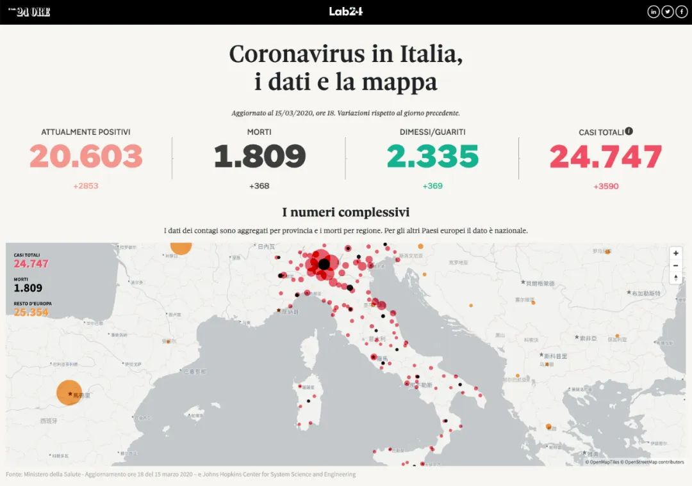

[四十日谈] Marco的米兰封城日记-01
原文链接 备份链接 3月8日下午，意大利政府通过了新法令，对伦巴第大区以及十一个邻近省份实行封闭式管理。从当晚零点开始，米兰“封城”了。虽然具体的实施方式和疫情所处的环境比起国内有许多不同，但真实的米兰纠竟是怎样的，米兰的人们怎么面对现在 …
3月9日，意大利总理孔特签署全境防疫法令，3月10日，意大利“封国”了。法令规定除必要需求、工作、就医外需避免外出，法令规定情况内的外出需准备个人声明。仅隔一天，意大利其他地区的人们就和米兰“站在了一起”，加入了宅家队伍。
就像是武汉封城之后，许多网友开始制作自己的视频日记，这让世界了解了武汉的人们的日常与他们面对疫情的许多情绪。四十日谈也正在创建一个平台，用影像使不同国家的人们看到在意大利的人们的状态。
影像工作者 Marco 也在继续做着封城生活记录，我们一起看看今天他做了什么吧。
视频作者已授权四十日谈4xDecameron发布，转载请联系我们
3月16日意大利疫情状况

Marco 十分精炼的自我介绍

这次新冠病毒在世界各地蔓延，发生了许许多多的矛盾，也同时是一个让世界各地不同的人们互相了解、感受和共情的机会。希望大家在家隔离的时候，调整好心情，在疫区的朋友们除了做好防护，也要注重营养，好好休息加强抵抗力。
- 推荐阅读 -


原文链接 备份链接 3月8日下午，意大利政府通过了新法令，对伦巴第大区以及十一个邻近省份实行封闭式管理。从当晚零点开始，米兰“封城”了。虽然具体的实施方式和疫情所处的环境比起国内有许多不同，但真实的米兰纠竟是怎样的，米兰的人们怎么面对现在 …
原文链接 备份链接 编者荐语： 就像是武汉封城之后，许多网友开始制作自己的视频日记，这让世界了解了武汉的人们的日常与他们面对疫情的许多情绪。四十日谈也正在创建一个平台，用影像使不同国家的人们看到在意大利的人们的状态。秋凉从封城的第0天开始 …
原文链接 备份链接 世卫组织最新报告显示，截至欧洲中部时间9日10时（北京时间9日17时），中国以外新冠肺炎确诊病例数达到28673例，死亡686例，其中，意大利确诊病例逼近1万。 为遏制疫情蔓延，意大利总理孔特当地时间9日夜间宣布，人员 …
原文链接 备份链接 图片来源：半岛电视台 记者 | 安晶 “我正在中世纪城市帕多瓦吃晚饭时，短信和电话蜂拥而至：最后一趟火车晚上11点31分出发，在军队封路之前赶回罗马。‘法令午夜就生效了，快点！’” 美联社记者托马斯（Trisha …
原文链接 备份链接 澎湃新闻记者 南博一 为遏制新冠病毒的传播，3月8日，意大利封锁了该国北部的伦巴第大区和11个邻近省份，1600万人的自由流动受到影响，封锁将一直持续到4月3日。 “我们面临着一个紧急情况，一个全国性的紧急情况，” …